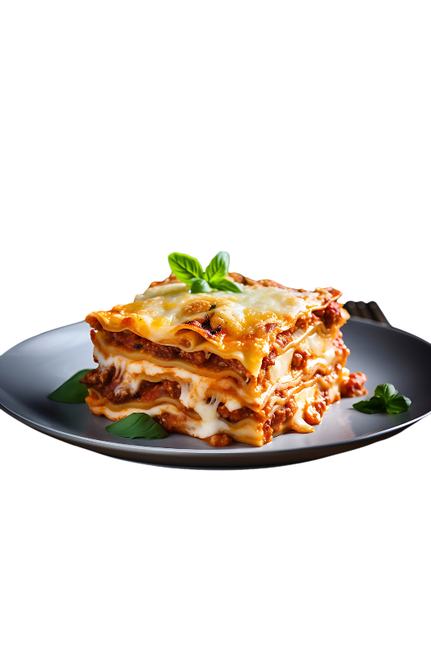

Home
Lasagna
Once a fat friend told me: "Lasagna means more to me than just food. It's an experience, a memory of cozy
evenings
with family and friends.
The aroma of freshly baked lasagna fills my home with warmth and comfort. After every bite of one pieces of
Lasagna, its feels like im in a Genjutsu".

Ingredients
- 1 pound lasagna noodles
- 1 pound ground beef
- 1 onion, chopped
- 2 cloves garlic, minced
- 1 (28 ounce) can crushed tomatoes
- 1 (6 ounce) can tomato paste
- 2 tablespoons dried oregano
- 1 teaspoon dried basil
- 1/2 teaspoon red pepper flakes
- Salt and pepper to taste
- 3 tablespoons olive oil
- 3 tablespoons all-purpose flour
- 3 cups milk
- 1/2 teaspoon nutmeg
- 1 cup grated Parmesan cheese
- 1 cup shredded mozzarella cheese
Instructions
- Cook: the lasagna noodles according to package directions. Drain and set aside.
- Make the meat sauce: In a large skillet, brown the ground beef over medium heat.
Drain
any
excess fat. Add the
onion and garlic and cook until softened.
Stir in the crushed tomatoes, tomato paste, oregano, basil, red
pepper
flakes, salt, and pepper.
Bring to a simmer and cook for at least 30 minutes, or until the sauce has
thickened.
- Make the béchamel sauce: In a medium saucepan, melt the butter over medium heat.
Whisk in
the
flour until
smooth. Gradually whisk in the milk, stirring constantly to prevent lumps.
Bring to a simmer, stirring
constantly, until the sauce has thickened.
Remove from heat and stir in the nutmeg and half of the Parmesan
cheese.
- Assemble the lasagna: Preheat oven to 375°F (190°C).
Spread a thin layer of béchamel
sauce in
the bottom of a
9x13 inch baking dish.
Top with a layer of lasagna noodles, then a layer of meat sauce, and a layer of
béchamel
sauce.
Repeat layers until all ingredients are used, ending with a layer of béchamel sauce.
Sprinkle
with the
remaining Parmesan cheese and mozzarella cheese.
- Bake: Cover with foil and bake for 30 minutes. Uncover and bake for an additional 15-20
minutes,
or until the lasagna is bubbly and the cheese is golden brown.
- Let rest: Allow the lasagna to rest for 10-15 minutes before serving.